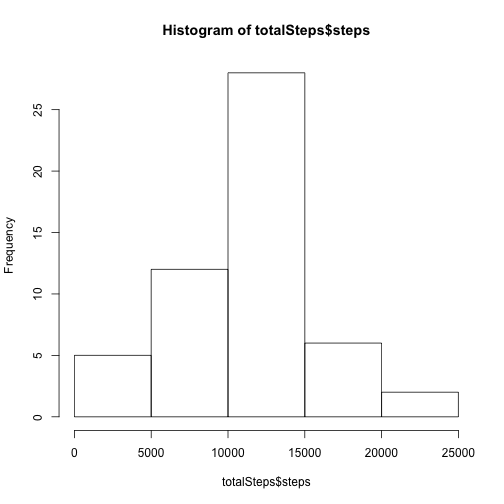
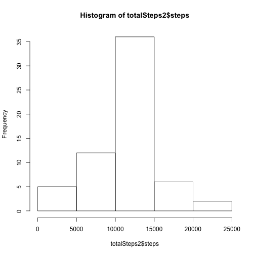
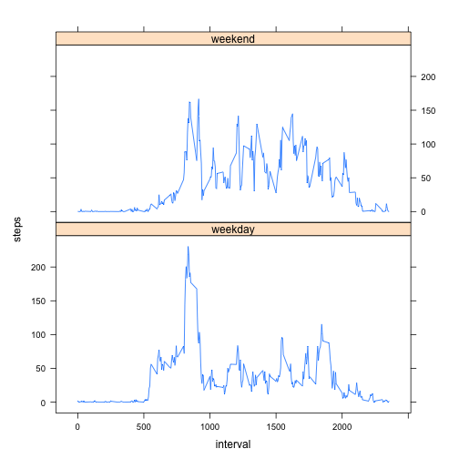

activity <- read.csv("activity.csv")
totalSteps<-aggregate(steps~date,data=activity,sum,na.rm=TRUE)
hist(totalSteps$steps)

mean(totalSteps$steps)
## [1] 10766.19
median(totalSteps$steps)
## [1] 10765
The mean total number of steps taken per day is 1.0766189 × 104 steps.
The median total number of steps taken per day is 10765 steps.
stepsInterval <- aggregate(steps ~ interval, data = activity, mean, na.rm=TRUE)
plot(steps ~ interval, data = stepsInterval, type="l")
stepsInterval[which.max(stepsInterval$steps),]$interval
## [1] 835
: I used a strategy for filing in all of the missing values with the mean for that 5-minute interval. First of all, I made a function "interval2steps" to get the mean steps for particular 5-minute interval.
interval2steps<-function(interval){
stepsInterval[stepsInterval$interval==interval,]$steps
}
activityFilled<-activity # Make a new dataset with the original data
count=0 # Count the number of data filled in
for(i in 1:nrow(activityFilled)){
if(is.na(activityFilled[i,]$steps)){
activityFilled[i,]$steps<-interval2steps(activityFilled[i,]$interval)
count=count+1
}
}
cat("Total ",count, "NA values were filled.\n\r")
## Total 2304 NA values were filled.
##
totalSteps2<-aggregate(steps~date,data=activityFilled,sum)
hist(totalSteps2$steps)

mean(totalSteps2$steps)
## [1] 10766.19
median(totalSteps2$steps)
## [1] 10766.19
The median total number of steps taken per day is 1.0766189 × 104 steps.
Do these values differ from the estimates from the first part of the assignment? What is the impact of imputing missing data on the estimates of the total daily number of steps?
: The mean value is the same as the value before imputing missing data because we put the mean value for that particular 5-min interval. The median value shows a little difference : but it depends on where the missing values are.
activityFilled$day=ifelse(as.POSIXlt(as.Date(activityFilled$date))$wday%%6==0,
"weekend","weekday")
# For Sunday and Saturday : weekend, Other days : weekday
activityFilled$day=factor(activityFilled$day,levels=c("weekday","weekend"))
stepsInterval2=aggregate(steps~interval+day,activityFilled,mean)
library(lattice)
xyplot(steps~interval|factor(day),data=stepsInterval2,aspect=1/2,type="l")

sum(is.na(activity$steps))
## [1] 2304